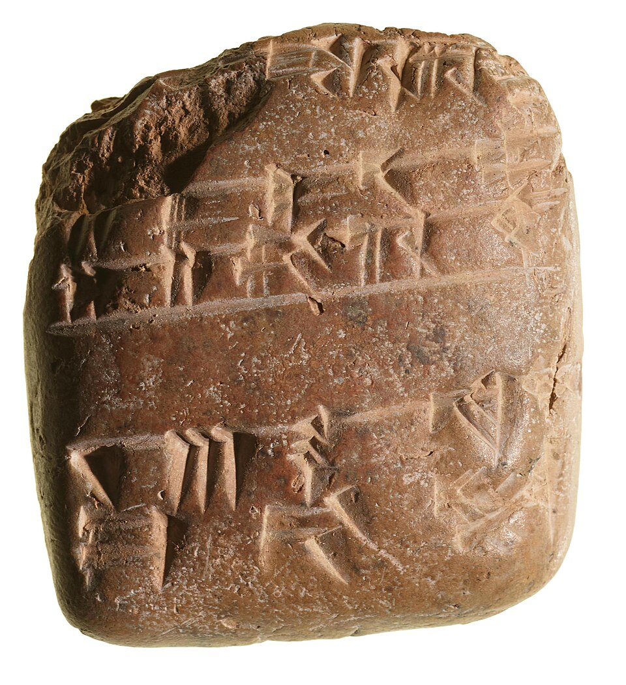
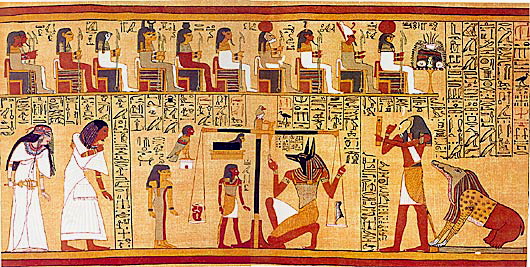
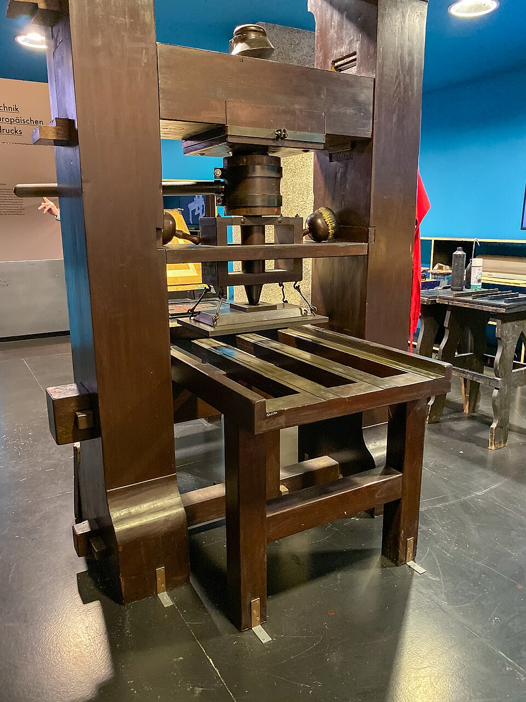
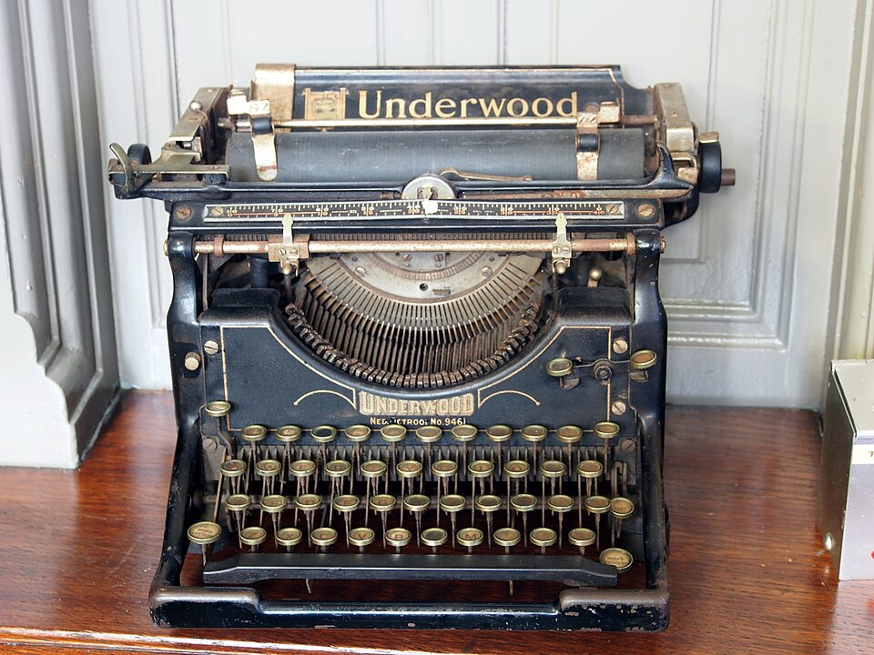

«Идёт дождь»
🔤 Текстовая
Слова и предложения: письма, рассказы, инструкции и сообщения.
От древних записей на глине до современных текстовых документов. Узнаем, как текст помогает передавать информацию и почему компьютер стал удобным инструментом для его подготовки.
Сегодня научимся различать ввод, редактирование и форматирование текста — три важных действия при создании документа.
Сегодня я узнал, как люди сохраняли сообщения.
Компьютер помогает исправлять и красиво оформлять текст.
Информация — сведения о мире, предметах и событиях. Её можно представить словами, числами, изображениями и другими способами. Текстовая информация — сведения, представленные с помощью письменных знаков.
Слова и предложения: письма, рассказы, инструкции и сообщения.
Температура, дата, результат измерения или вычисления.
Рисунки, фотографии, карты и условные обозначения.
Сообщение «Идёт дождь», значок тучи с каплями и измеренное количество осадков могут рассказывать об одном явлении, но делают это по-разному.
Текст — записанная последовательность символов, слов и предложений. В связном тексте предложения обычно объединены общей темой и смыслом.
С помощью текста люди сохраняют знания, передают сообщения, объясняют правила и рассказывают истории. К записанному можно вернуться позднее.
Задолго до компьютеров человек записывал важные сведения на разных материалах. Посмотри на настоящие исторические предметы и их изображения.

В древней Месопотамии знаки вдавливали в мягкую глину, затем таблички высушивали.
Фото: Wikimedia Commons · общественное достояние
Из стеблей растения изготавливали материал для письма. Свитки было удобнее переносить.
Изображение: Wikimedia Commons · общественное достояние
Печать позволила значительно быстрее делать много экземпляров книг и других текстов.
Фото: Wikimedia Commons
Текст печатали клавишами сразу на бумаге. Исправлять ошибки было непросто.
Фото: Alf van Beem, Wikimedia Commons · CC0Разные способы записи сосуществовали в разных странах. Люди также использовали пергамент, бумагу, перья, ручки и другие материалы. Главный результат изобретения письменности — возможность сохранять информацию для тех, кто прочитает её позже .
Буквы, цифры, пробелы и знаки препинания — это символы. Из букв образуются слова, из слов — предложения, из предложений — абзацы и целые тексты.
Сегодня мы гуляли по парку. На дорожках лежали жёлтые листья.
Дул прохладный ветер. Нам понравилась прогулка!
Пойдём гулять!
Говорящий эмоционально предлагает прогулку.
Пойдём гулять?
Говорящий спрашивает, состоится ли прогулка.
Замена буквы может изменить слово, а знак препинания — смысл или интонацию предложения. Поэтому при подготовке документов нужно внимательно проверять написанное.
Текст можно написать ручкой на бумаге, но на компьютере легче исправлять его, переставлять части, оформлять, сохранять и передавать другим людям.
Набираем буквы, цифры и знаки с клавиатуры. Текст сразу появляется на экране.
Исправляем ошибки, добавляем слова, удаляем лишние фрагменты.
Изменяем шрифт, размер, цвет, выравнивание и оформление заголовков.
Сохраняем документ в виде файла и открываем его снова.
Отправляем копию текста через разрешённые средства связи.
Получаем бумажный экземпляр электронного документа.
Это схема отдельных клавиш, а не полная точная клавиатура. Рассмотри, для чего нужны специальные клавиши.
Текстовый редактор позволяет создавать и изменять текст. Текстовый процессор дополнительно предоставляет развитые средства оформления документа: заголовки, списки, таблицы, изображения.
Подходит для простых текстовых заметок. Формат TXT сохраняет символы, но не оформление вроде цветного заголовка или полужирных слов.
Я могу выделить важное слово, сделать заголовок крупнее и расположить текст аккуратно.
Подходит для докладов, школьных проектов и документов. Примеры: Microsoft Word, LibreOffice Writer, Р7-Офис .
Макеты специально упрощены, чтобы увидеть различие между программами. Внешний вид реальных редакторов зависит от их названия и версии. Текстовый процессор тоже является разновидностью программы для редактирования текста.
Документ обычно проходит несколько этапов. Порядок удобен для понимания, но в реальной работе можно возвращаться назад и продолжать исправления.
Набрать текст
Исправить ошибки
Изменить внешний вид
Перечитать
Записать в файл
Текст набрали с ошибкой. Слова и предложения уже появились.
Исправили одну букву. Изменилось содержание текста.
Увеличили размер, изменили цвет и выравнивание. Слова остались прежними.
Редактирование — изменение содержимого текста: исправление, добавление и удаление символов. Форматирование — изменение внешнего вида: шрифта, размера, цвета, начертания и расположения текста.
Текстовый документ можно сохранить в файле. При сохранении выбирают имя, место хранения (папку) и формат. Позже файл можно снова открыть и изменить.
Обычный текст без сложного оформления.
Документ с оформлением, списками и изображениями.
Открытый формат оформленных текстовых документов.
Статический учебный макет. Расположение команд отличается в разных операционных системах и программах.
Электронный документ можно держать в папке на накопителе, копировать и передавать через разрешённые средства связи. Существуют электронные письма и облачные хранилища.
Принтер переносит текст на бумагу. Струйные принтеры используют капли чернил, лазерные — тонер. Полученный лист — бумажная копия документа.
Сообщения, доклады, сочинения, проекты, записи и инструкции.
Работа писателей, журналистов, учителей, редакторов и многих других специалистов.
Письма, приглашения, объявления и сообщения помогают людям обмениваться сведениями.
Хороший текст должен быть понятным и грамотным. Красивое оформление облегчает чтение, но не заменяет проверку содержания и исправление ошибок.
Ответь своими словами. Все необходимые определения, примеры и схемы есть в этом учебнике.
Что называют текстовой информацией?
Почему текст является одной из распространённых форм представления информации?
Какие материалы люди использовали для записи текстов в прошлом?
Почему появление письменности стало важным событием в истории человечества?
Из каких основных элементов состоит письменный текст?
Почему изменение одного символа или знака препинания может изменить смысл сообщения?
Какие преимущества даёт компьютер при подготовке текстов?
Что такое текстовый редактор и для чего он предназначен?
Чем текстовый процессор отличается от простого текстового редактора?
Какие основные этапы подготовки текстового документа существуют?
Чем редактирование текста отличается от форматирования?
Как можно сохранить, передать и распечатать текстовый документ?
Мы познакомились с текстовой информацией, историей письменности и основными возможностями компьютера при подготовке документов.
Символы, слова, предложения и абзацы помогают передавать мысли.
Ввод создаёт текст, редактирование исправляет, форматирование оформляет.
Файл открывают повторно, передают другим или печатают.
Компьютер — универсальный инструмент подготовки текстов. Он помогает работать быстрее и аккуратнее, но грамотность, содержание и проверка написанного остаются задачами человека.
Об изображениях. Исторические фотографии загружаются из Wikimedia Commons и сопровождаются ссылками на их страницы с авторами и лицензиями. Схемы, окна программ, клавиатура и другие учебные иллюстрации созданы средствами HTML/CSS. Если внешний сервер временно недоступен, текст урока и схемы остаются видимыми.